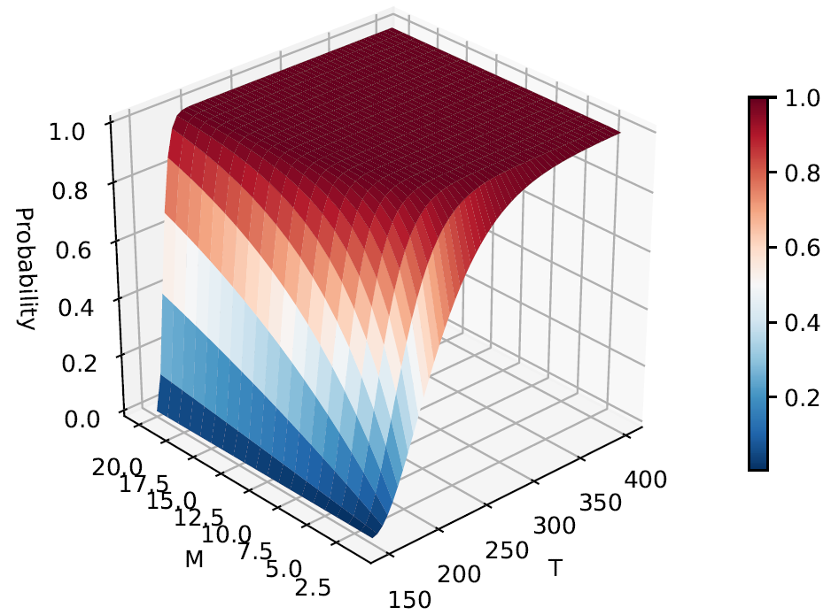

|
 |
Abstract:This paper is concerned with locomotion problems for the quadruped robot in unknown and unstructured terrains, utilizing the emerging deep reinforcement learning technique. The state-of-the-art deep deterministic policy gradient (DDPG) algorithm is leveraged to acquire the gait policy by learning from interactions with the environment. The framework of learning system is presented based on the actor-critic architecture, and the additional domain-specific knowledge is exploited for shaping the reward function to enhance the learning efficiency during training. Moreover, a simulation study is implemented to validate the performance of the proposed DDPG-based controller.
[Paper]
|